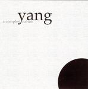

| Artist: | Yang |
| Title: | A Complex Nature |
| Label: | Cuneiform Rune 197 |
| Length(s): | 48 minutes |
| Year(s) of release: | 2004 |
| Month of review: | [06/2005] |
| 1) | Les Deux Mondes | 8.14 |
| 2) | Souterrain | 6.38 |
| 3) | Séducteur Innocent | 5.48 |
| 4) | Compassion | 4.28 |
| 5) | Manchild | 4.44 |
| 6) | Impatience | 7.04 |
| 7) | Le Masque Rouge | 5.29 |
| 8) | Orgueil | 5.54 |
All samples of A Complex Nature appear here by permission of Cuneiform Records.
Souterrain is a bit more jazzy, rather funky in fact with the many short strummings, and the drummer again in jazz mode. The pace is high, and the playing versatile. Halfway, the sound turns a bit darker, and the jazz influence immediately diminishes. Then the jazziness comes back in, more pace, more happening at the same time, a bit chaotic even. But not without merit.
Séducteur Innocent is more a rock vein again. Jazzrock that is. The Crimson influences of the opener are largely gone, unfortunately. This is more standard fare as jazzrock goes, built around a guitar melody, played in tandem. The roughness of the guitar playing does help, and the melodies are not bad, take the once occurring smack in the middle. In fact, it is these melodies, the powerful almost progmetallic chords that work towards any given climax, and the sometimes present Crimson-like tension that makes this band stand out from the average jazzrock band.
Compassion's opening shows that we may have a bit of rest on this one. Well, the music is rather slow, but the guitar building on the repetitive guitar in the back, puts itself strongly in the foreground with its high pitched notes. The bass strongly asserts itself in the middle, interesting that. For the rest, a rather mellow and melodic affair this one.
Manchild is a bit of a hesitant piece, with many alternations between subdued and less subdued. The overall effect is one of airiness. That is, until the pace finally does set in, for some good guitarwork that really dances, flamenco style.
Impatience brings us back to jazzrock, with a rather mellow middle part. After that the rather funnky jazzrock comes back in, to die down soon after. Here, I get the Crimson feel again, while the guitar almost mumbles in the back. I expected the band to go for the large epic build-up here, but that doesn't happen.
Le Masque Rouge opens with a rowdy guitar sound, with a poppy melody dancing through (on the other guitar, obviously). I hear resemblances to Gordian Knot. Melodiwise this is an excellent tune with the balance in friendliness and edge. The middle part concentrates on the friendly side, this is indeed quite mellow and classical sounding. The third part mirrors the first part. The main theme by the way reminds me of Radiohead. The final part is back to the mellow second part. Quite some variation for a track of its length.
Orgueil is a closer that comes at the right moment (my impression is that albums in this instrumental rock style tend to overstay their welcome by being very long; more is less in that case). This final track is back to rather straightforward jazzrock with Crimsonesque leanings and a Pink Panther feel.